Section F

Mistuba
Comestibilité : Feuille, tige, racine, graine ✔
Période de floraison : Juillet - Août
Le mistuba, aussi appelé « persil japonais », est une excellente plante
pour les zones ombragées. Son feuillage comestible a un goût qu’on peut décrire
comme étant entre celui du persil et du céleri. Il s’utilise cru n’importe
où et on peut aussi utiliser les tiges qui sont tendres (contrairement à
celle du persil). Vous pouvez donc récolter la plante au ras du sol ce qui
encouragera l’émergence d’encore plus de tiges. Si vous désirez l’utiliser
cuite, faire une cuisson très rapide car le goût disparaîtra complètement.
Le mitsuba produit de minuscules fleurs blanches.
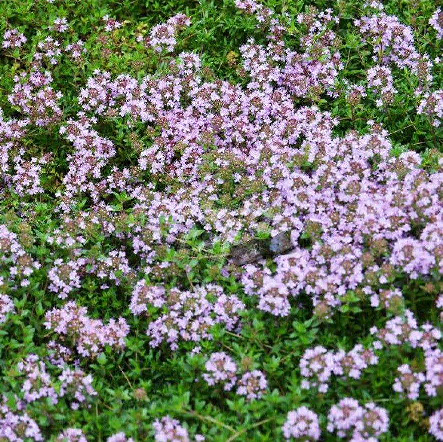
Thym commun
Comestibilité : Feuille ✔
Période de floraison : Juin - Août
Le thym, ce n’est pas compliqué, ça va dans TOUT : les soupes, le pot-au-feu,
la blanquette, les marinades, le fond, les ragoûts, les grillades, la
volaille, le rôti, le gigot, les légumes, le riz, les farces, le poisson,
les œufs, les salades, les vinaigrettes, l'alcool, le cassoulet, le bœuf
bourguignon, la sauce tomate, les lentilles... Vous trouverez sûrement
autre chose. Il garde très bien son parfum une fois séché et peut mijoter
longtemps dans les plats sans devenir fade. En plus, il est bourré de
propriétés médicinales. Il est utile pour toutes les affections des voies
respiratoires, en plus d'être tonique et antioxydant. Mais franchement, on
peut boire cette tisane juste pour son goût!
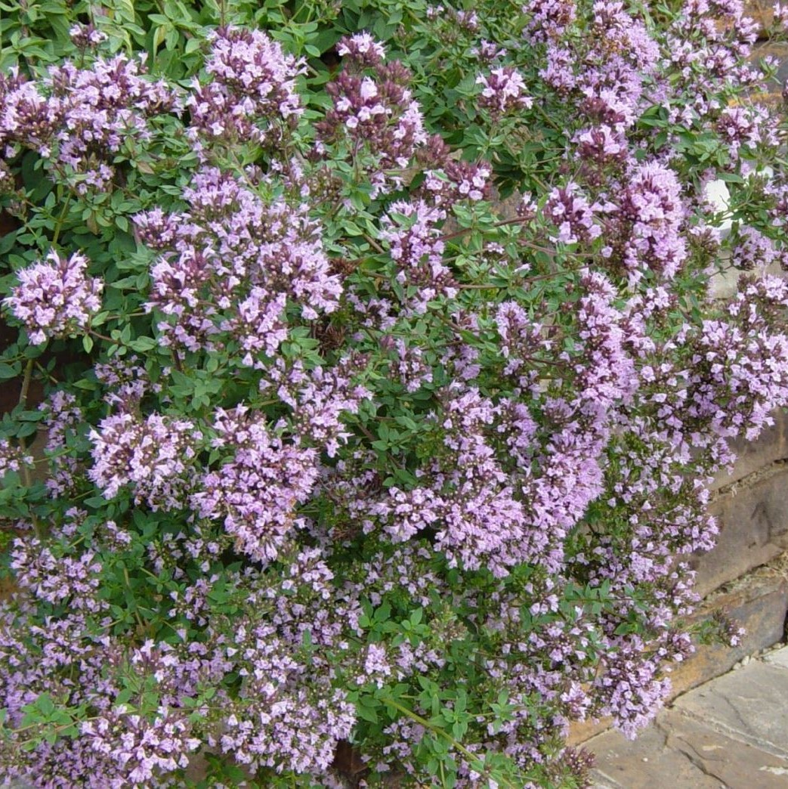
Origan doré
Comestibilité : Feuille ✔
Période de floraison : Juillet - Septembre
L’origan est une vedette de la cuisine méditerranéenne. L’origan doré a
un goût identique, quoique plus doux. Il s'utilise sur les pizzas, dans la
sauce tomate et les vinaigrettes, sur les grillades, etc. Fait curieux,
c'est une des seules plantes dont il est préférable d'utiliser le feuillage
séché, qui est alors plus goûteux et moins amer. On le cueille juste avant
la floraison. On peut aussi l'utiliser en tisane pour soulager les symptômes
du rhume. C'est une plante qui s'étend beaucoup. Elle peut tolérer le vent
et la sécheresse.
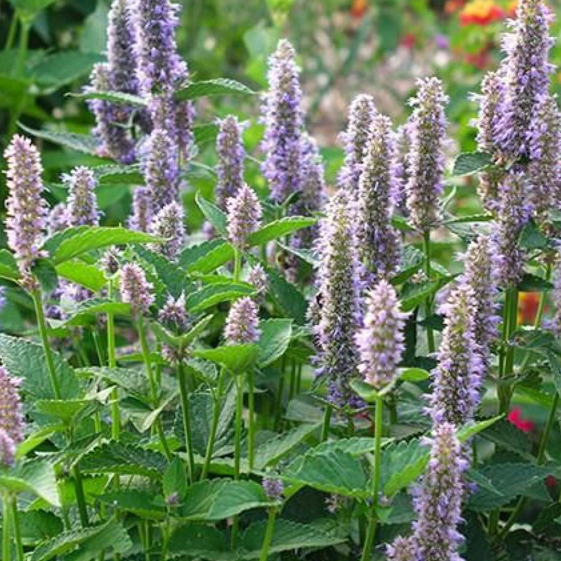
Agastache
Comestibilité : Feuille ✔
Période de floraison : Juillet - Septembre
L'agastache fenouil est une vivace de courte vie qui se ressème abondamment.
Elle est indigène au Québec. Ses feuilles au goût anisé servent à faire une
agréable tisane, mais elles gagnent à être utilisées plus largement, crues
dans les salades ou cuites dans certains mets. L'agastache produit de très
nombreuses fleurs qui attirent les insectes pollinisateurs comme les abeilles,
les bourdons et les papillons. Facile de culture, elle tolère bien la sécheresse.
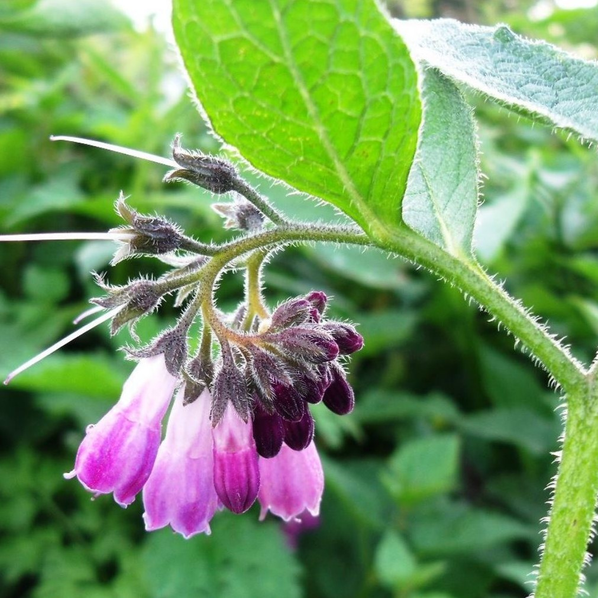
Consoude de Russie Bocking 4
Comestibilité : Aucune ❌
Période de floraison : Mai - Juin
La consoude de Russie, c’est peut-être LA plante de la permaculture, et
elle n’est même pas comestible ! On la cultive pour plusieurs autres raisons,
notamment pour produire son propre paillis. Elle est parfaite pour ce rôle,
notamment parce qu’elle pousse très rapidement. On peut la tailler au ras du
sol plusieurs fois dans l’été. Elle est un couvre-sol extrêmement efficace
par la densité de son feuillage. Finalement, elle a les mêmes propriétés
médicinales que la consoude officinale, très cicatrisante et pour les maux
de la peau, sans le côté terriblement envahissant.
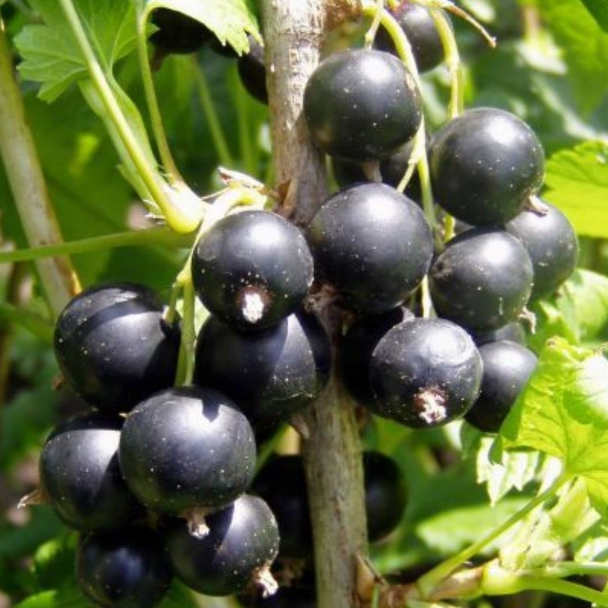
Cassis « Titania »
Comestibilité : Fruit ✔
Période de floraison : Mai
Cet arbuste vigoureux produit une abondante récolte de gros fruits noirs
riches en vitamine C. Ses fruits sont moins acides que ceux d’autres cassissiers.
Ce cultivar résiste au blanc et à la rouille vésiculeuse du pin blanc. Excellent
frais, mais aussi en confitures, gelées, jus, tartes, vins, etc. Certains
herboristes considèrent le cassis comme une pharmacie entière à lui seul…
À découvrir!
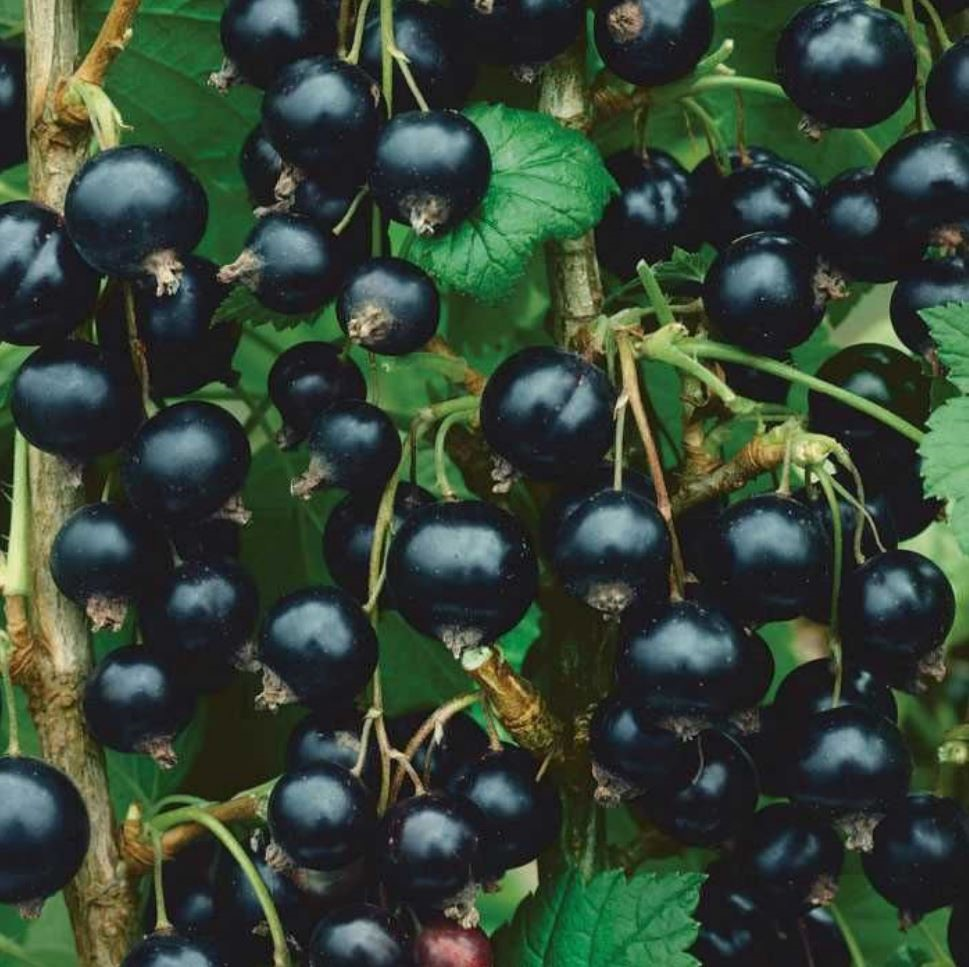
Cassis « Consort »
Comestibilité : Fruit ✔
Période de floraison : Mai
Cet arbuste vigoureux produit une abondante récolte de gros fruits noirs
riches en vitamine C. Ses fruits sont moins acides que ceux d’autres cassissiers.
Ce cultivar résiste au blanc et à la rouille vésiculeuse du pin blanc. Excellent
frais, mais aussi en confitures, gelées, jus, tartes, vins, etc. Certains
herboristes considèrent le cassis comme une pharmacie entière à lui seul…
À découvrir!
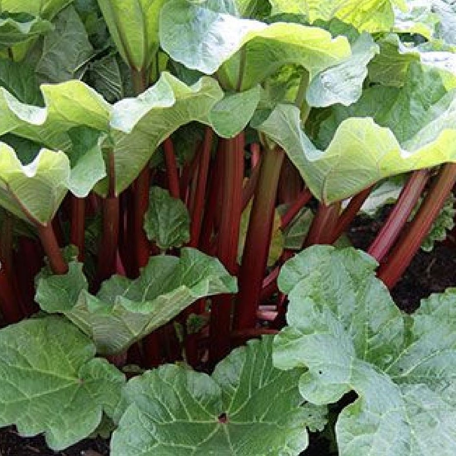
Rhubarbe
Comestibilité : Tige ⚠
Mise en garde : ATTENTION LES FEUILLES SONT TOXIQUES
Période de floraison : Juin
La rhubarbe est un légume vivace par excellence! Les tiges aigres-douces de
cette plante très rustique peuvent servir autrement que dans la fameuse tarte
fraise-rhubarbe. Pensez à en faire une confiture parfumée au gingembre ou un
sirop que vous allongerez avec de l'eau pour faire une boisson rafraîchissante.
Vous pouvez la négliger, passer la tondeuse dessus, une fois bien établie,
cette vivace de longue vie est là pour rester. Et pourquoi la cacher au fond
de la cour? Sa floraison spectaculaire nous plaît bien !
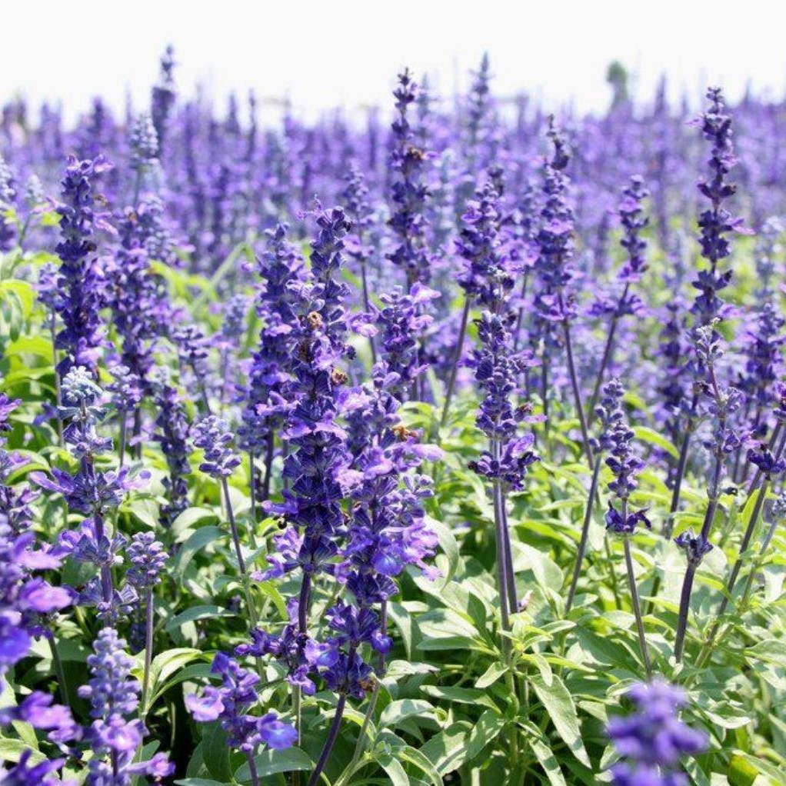
Hysope officinale
Comestibilité : Feuille, fleur ✔
Période de floraison : Juillet - Août - Septembre
L’hysope officinale produit de merveilleux épis de fleurs mauves qui
enchantent les insectes. C’est une plante au goût puissant qui rappelle
la menthe. Elle peut être utilisée pour aromatiser les soupes et les
salades, par exemple. En herboristerie traditionnelle, elle est associée
au système respiratoire, particulièrement pour les cas où ce dernier est
engorgé par le mucus. Sa longue floraison et son port dressé et compact
en font un couvre-sol particulièrement efficace et attrayant.
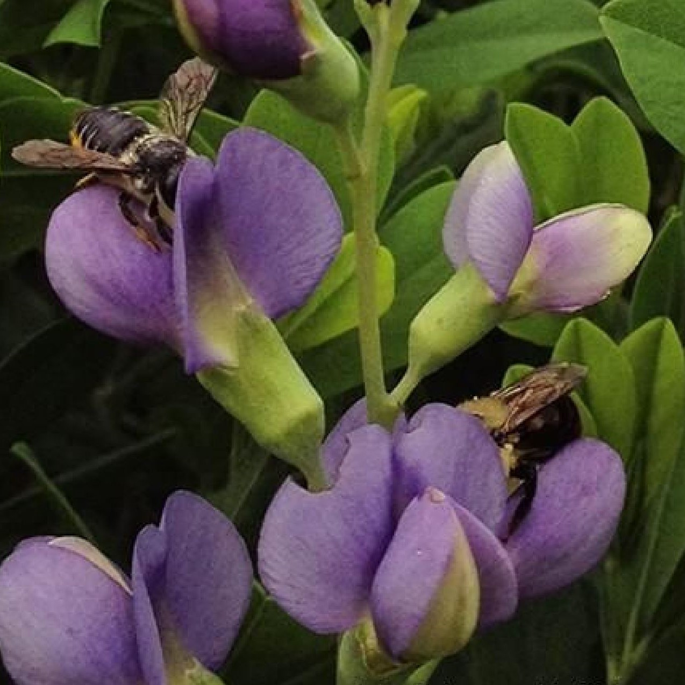
Lupin indigo
Comestibilité : Aucune ❌
Période de floraison : Juillet - Août
Plante fixatrice d'azote très ornementale avec ses très longs épis de
fleurs bleutées. Sa hauteur peut en faire la vedette d'une section de
votre aménagement. Elle ressemble beaucoup au lupin qu'on voit souvent
dans les jardins (qui est du genre Lupinus et non pas Baptisia...), sans
attirer les pucerons comme ce dernier. Une bonne raison de l'y préférer !
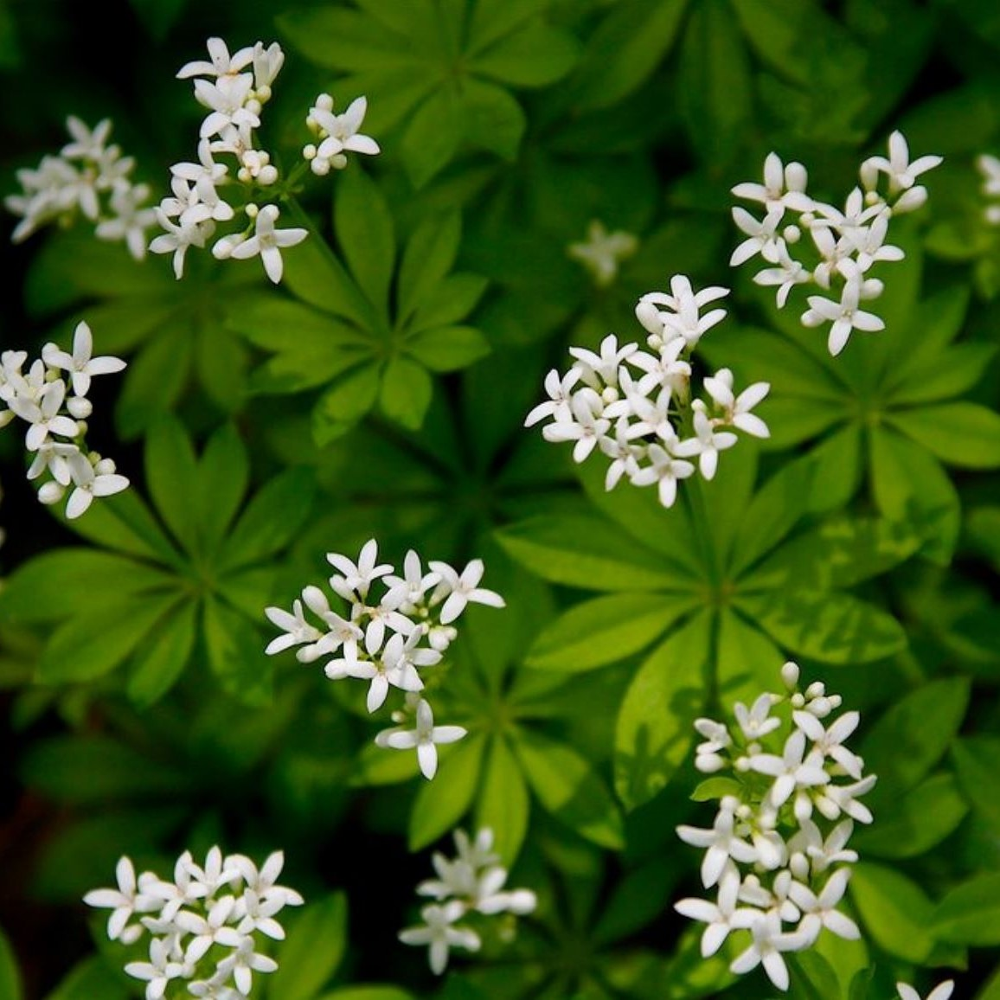
Aspérule odorante
Comestibilité : Fleur ⚠
Mise en garde : Peut causer maux de tête, somnolence et vertiges : à utiliser à petite dose
Période de floraison : Mai - Juin - Juillet
L’aspérule odorante, lorsqu’on en froisse les feuilles, a une délicieuse
odeur de foin coupé très apparenté à celle du foin d’odeur, certains diront
à celle de la vanille. C’est pour cette raison que l’on trouve parfois des
recettes de desserts aromatisés à l’aspérule odorante. Les fleurs sont
utilisées en herboristerie pour leurs propriétés calmantes, anti-stress et
pour lutter contre l’insomnie. C’est une plante qu’on utilise à petite dose
car elle est très puissante et peut causer des maux de tête, de la
somnolence et des vertiges. Plantée serré, on peut en faire un merveilleux
couvre-sol d’ombre.
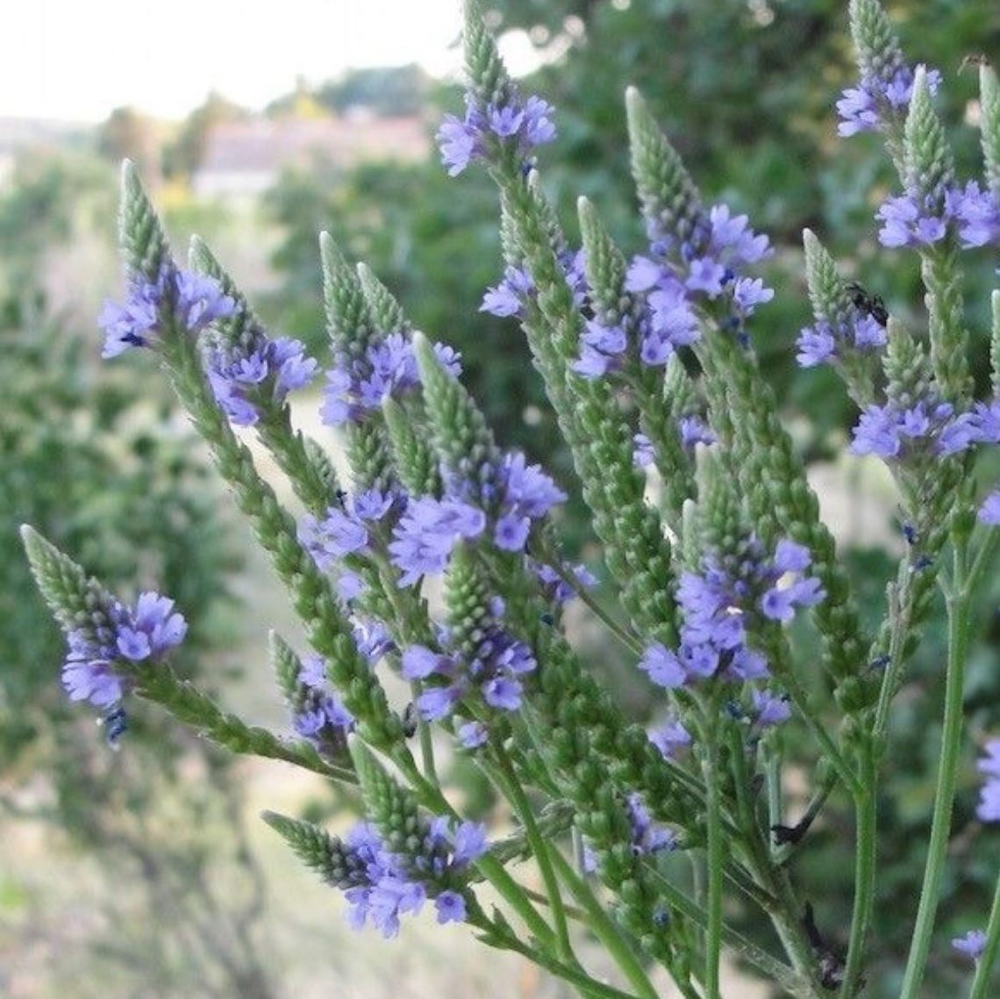
Verveine hastée
Comestibilité : Graine, feuille ✔
Période de floraison : Juillet - Août - Septembre
La verveine hastée est une plante indigène du Québec. Ce n’est pas
la verveine citronnée que l’on retrouve souvent dans les tisanes. On la
cultive plutôt pour sa floraison prolongée qui attire les insectes en
fin de saison.
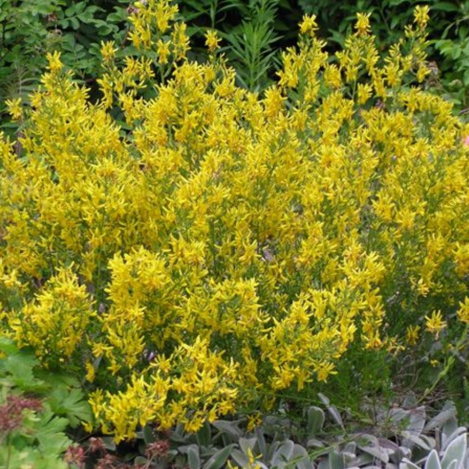
Genêt des teinturiers
Comestibilité : Fleur ✔
Période de floraison : Juin - Juillet - Août
Joli petit arbuste au port compact à l'impressionnante floraison jaune.
En plus de ses qualités ornementales, cette plante fixe l’azote atmosphérique
et le rend disponible au niveau du sol.
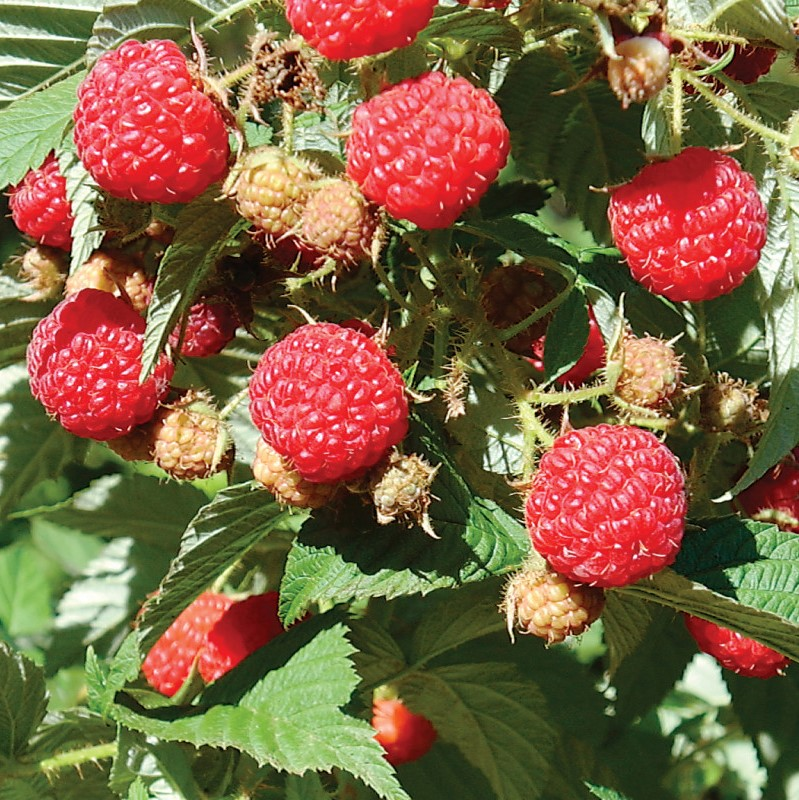
Framboisiers remontants rouges Polana
Comestibilité : Fruit ✔
Période de floraison : Tout l’été
Les framboisiers remontants produisent des framboises sur les pousses de
l’année précédente en juillet et des framboises sur les pousses de l’année
à l’automne. C’est pourquoi on les appelle souvent « framboises d’automne ».
Les feuilles séchées possèdent des propriétés médicinales qui en font une
bonne tisane quotidienne pour les femmes : elles réduisent les crampes
menstruelles et régularisent le cycle.
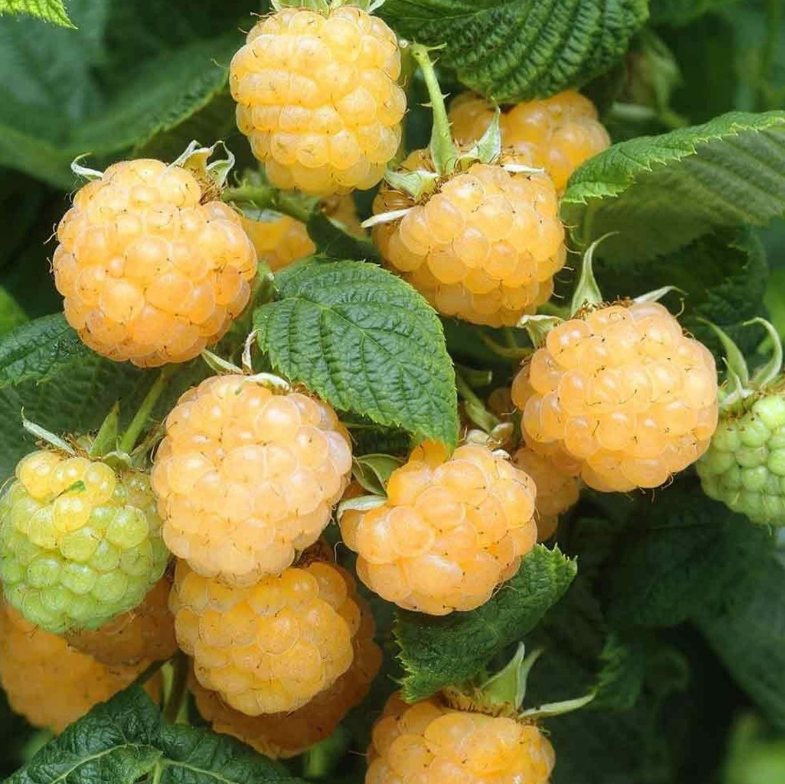
Framboisiers remontants jaunes
Comestibilité : Fruit ✔
Période de floraison : Tout l’été
Les framboisiers remontants produisent des framboises sur les pousses de
l’année précédente en juillet et des framboises sur les pousses de l’année
à l’automne. C’est pourquoi on les appelle souvent « framboises d’automne ».
Les feuilles séchées possèdent des propriétés médicinales qui en font une
bonne tisane quotidienne pour les femmes : elles réduisent les crampes
menstruelles et régularisent le cycle.
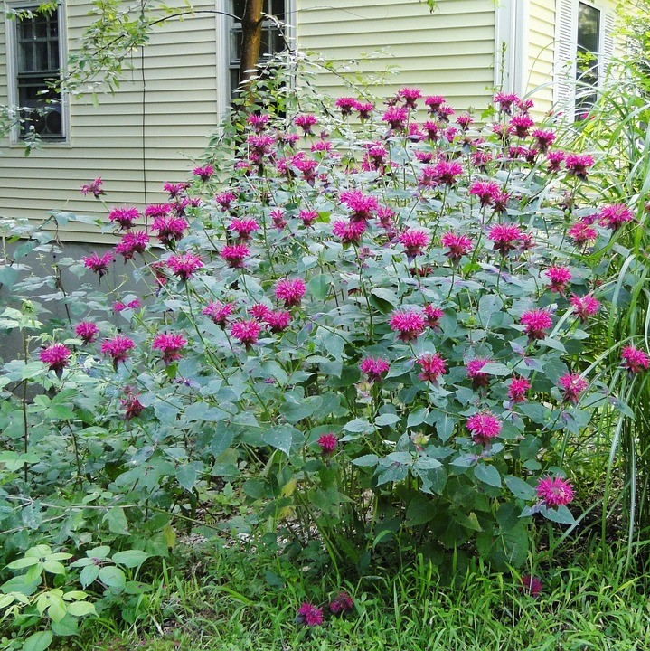
Monarde
Comestibilité : Fleur, feuille ✔
Période de floraison : Juin - Août
La monarde ne passe pas inaperçue avec ses fleurs parfumées semblables
à de petits feux d'artifices. Ses feuilles ont un goût de menthe et peuvent
s'utiliser cuites comme n'importe quel légume vert, ou crues dans les salades
(même les salades de fruits!) Idem pour les pétales des fleurs. On peut faire
une tisane avec les feuilles séchées. Elle résiste aux maladies fongiques
auxquelles les variétés cultivées sont souvent très sensibles.
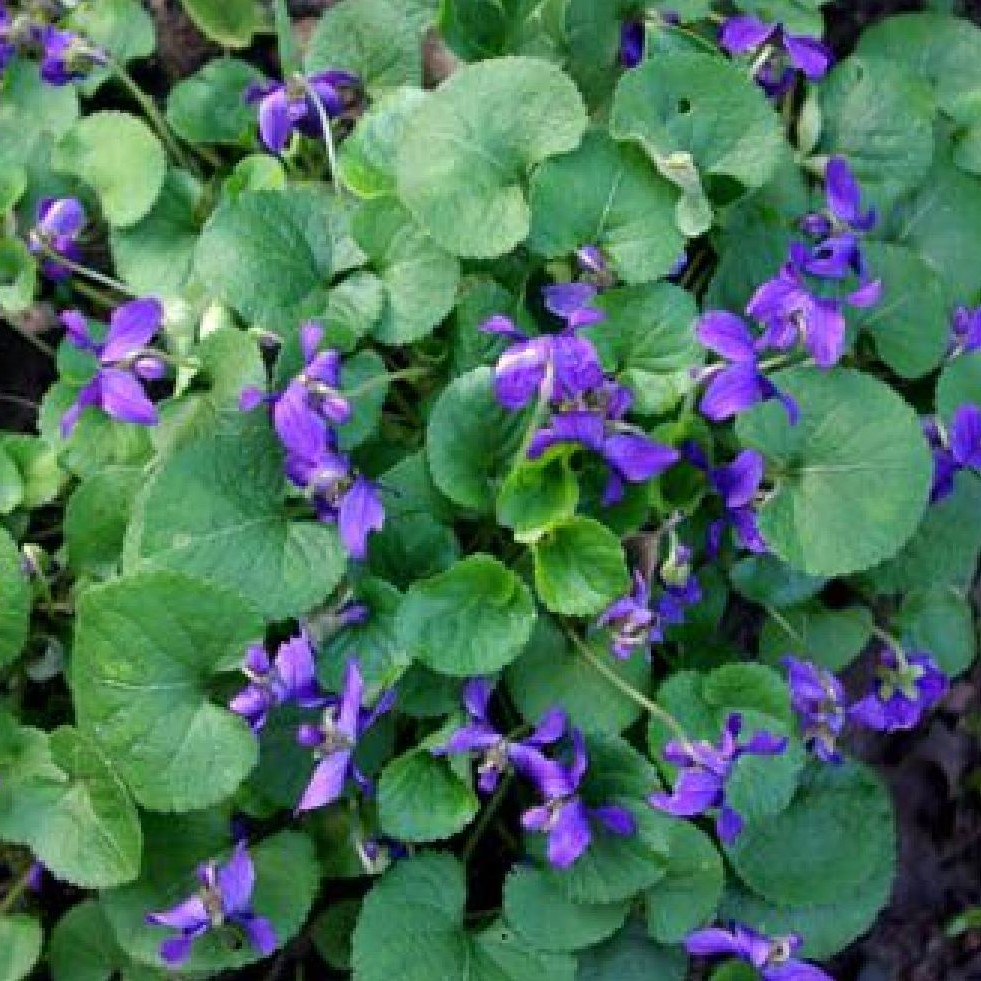
Violette
Comestibilité : Fleur ✔
Période de floraison : Juin